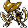

#141
Kabutops
RockWater
Abilities: Swift Swim, Battle Armor, Weak Armor
Base stats BST 495
HP60
Attack115
Defense105
Speed80
Sp. Atk65
Sp. Def70
Evolution
None detected.
Level-up learnset
LevelMoveType
Lv. 1LeerNormal
Lv. 1SlashNormal
Lv. 1HardenNormal
Lv. 1ScratchNormal
Lv. 1Sand AttackGround
Lv. 1Rapid SpinNormal
Lv. 7AbsorbGrass
Lv. 10Aqua JetWater
Lv. 13RolloutRock
Lv. 19Rock SlideRock
Lv. 22Sand AttackGround
Lv. 25AncientpowerRock
Lv. 28EndureNormal
Lv. 30SlashNormal
Lv. 30Night SlashDark
Lv. 32WaterfallWater
Lv. 36Knock OffDark
Lv. 40Mega DrainGrass
Lv. 43ProtectNormal
Lv. 52Leech LifeBug
Lv. 56LiquidationWater
Lv. 60Stone EdgeRock
Wild locations
Not found in the parsed wild encounter tables.